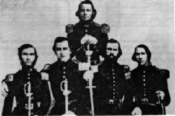

West Augusta Guard with William S. H. Baylor Standing
| William Smith Hanger Baylor was born in Augusta County on April 7, 1831. He graduated from Washington College and also studied at the University of Virginia before becoming the Commonwealth Attorney for Staunton. Before the war, Baylor served as the Captain of the West Augusta Guard, a division of the 160th Regiment Virginia Militia, and then later joined the 5th Virginia Infantry during the war. In April 1862, he was made commander of the Stonewall Brigade. Baylor was killed in battle at Second Manassas in August 1862. |
|
the most likely matches in the Valley of the Shadow databases: |
Baylor Household: 1860 Census | 1860 Slaveowner Census | Military Service
This collection contains three letters written to Mary Baylor in 1862. Her correspondents were her husband, William S. H. Baylor, and one of his fellow soldiers, Edward P. Walton. Topics include promotions, military leadership, religion, and death.
Return to the War Years Personal Papers